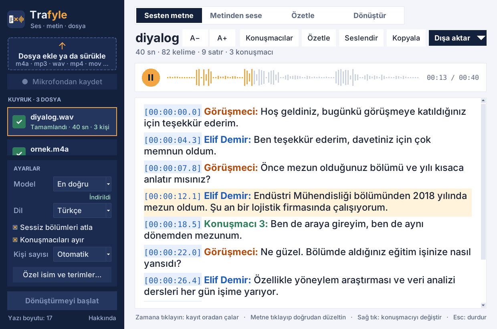
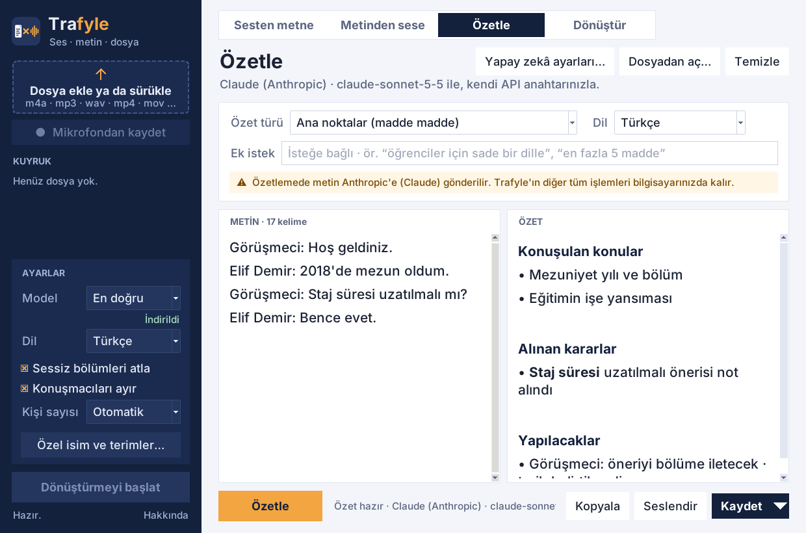
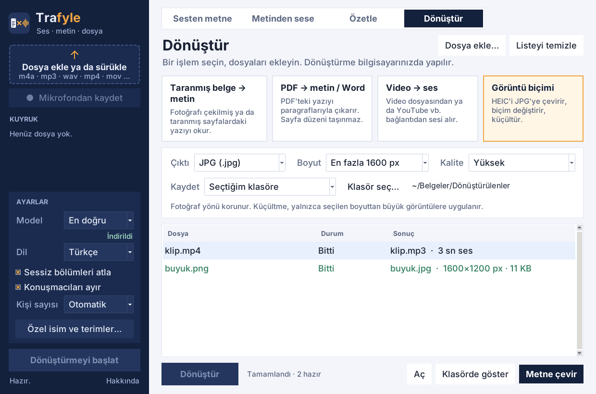

Trafyle konuşmayı yazıya döker, konuşmacıları ayırır, metni seslendirir; PDF, fotoğraf, video ve görüntü dosyalarını dönüştürür. Ücretsiz ve açık kaynaklı.
İlk açılışta çıkan güvenlik uyarısını nasıl geçeceğinizi aşağıda anlattık. Tüm sürümler: GitHub Releases

Türkçe için tasarlandı; başka dillerde de çalışır.
Ses ve video kayıtlarını yazıya döker; kim ne dedi diye konuşmacıları ayırır. Zamana tıklayınca kayıt oradan çalar, metni yerinde düzeltirsiniz.
Toplantıyı, dersi, görüşmeyi kaydedin; kayıt bitince kendiliğinden yazıya dökülsün.
Dökümü Word, PDF, düz metin ya da SRT/VTT altyazı olarak kaydedin.
Metni bilgisayarın Türkçe sesiyle okutun; sayılar, tarihler ve kısaltmalar doğru okunur. Telaffuz sözlüğü ile ince ayar yapın.
Taranmış belge ve fotoğraftan metin, PDF'ten Word, videodan ya da video bağlantısından ses, HEIC'ten JPG.
Toplantı notu, ana noktalar ya da kısa özet. Kendi Claude, ChatGPT ya da Gemini anahtarınızla, açık onayınızla.
Yazıya dökme, konuşmacı ayırma, seslendirme ve dönüştürme tamamen bilgisayarınızda çalışır. Hesap yok, reklam yok, kullanım takibi yok.

Trafyle ücretsiz ve gönüllü olarak geliştirildiği için ücretli imza sertifikası kullanmıyor. Bu yüzden Windows ve Mac ilk açılışta bir uyarı gösterir; bir kez geçmeniz yeterli.
İlk yazıya dökmede konuşma tanıma modeli bir kerelik indirilir (seçilen modele göre 75 MB – 1,6 GB). Intel işlemcili Mac'ler ve Linux için kaynaktan kurulum mümkündür.
Trafyle GNU GPL-3.0 lisansıyla ücretsizdir. Hata bildirmek, öneri yapmak ya da katkıda bulunmak için GitHub'daki “Issues” sayfasını kullanabilirsiniz.
